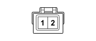

K036 ENGINE COOLANT TEMPERATURE SENSOR/SENDER UNIT (ENGINE)
- Path
- Electrical equipment > 3 CONNECTORS > K SENSORS AND SENDER UNITS > K036 ENGINE COOLANT TEMPERATURE SENSOR/SENDER UNIT > K036 ENGINE COOLANT TEMPERATURE SENSOR/SENDER UNIT (ENGINE)
- Kind
- connector pinout (pin -> wire colour -> other end)
- Applies to
- engines: 1.1, 1.2 8v; all production periods
- Interactive page
- https://sloeber94.github.io/elrnDB-fPnd/en/#/169003287
Applies to: engines: 1.1, 1.2 8v; all production periods

Wiring | Colour |
|---|---|
- |
Pin | Cable | Destination | |||
|---|---|---|---|---|---|
Sec.. | Colour | Node | Connect. | Pin | |
1 | 0,5 | BN (white with black stripe) | X | 1 | |
1 | |||||
1 | |||||
54 | |||||
2 | 0,5 | HB (grey with white stripe) | 62 | ||